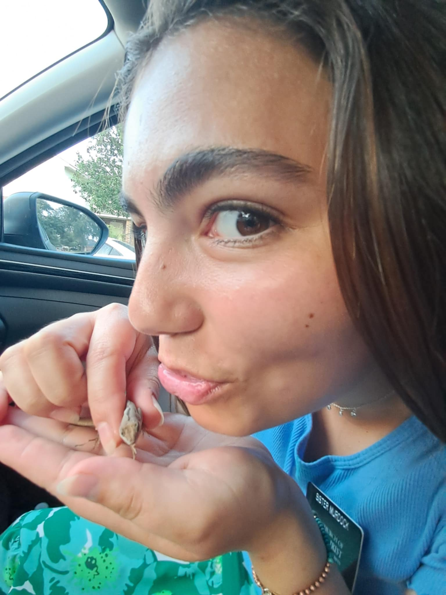

Scratch Project: Lizards
Back to Resume
Link to Web App
Jump to Tableau ↓
This is my Scratch Project about Lizards! Enjoy!

- WHY I LOVE LIZARDS
- They are hard to catch which makes it more fun to catch them
- Lizards are great pets for a day
- I don't see them all the time so when I do it is a treat!
- Their tails can come off and then they grow a new one which is pretty cool!
- SOME FUN MEMORIES I HAVE WITH LIZARDS
- After a hurricane in Texas I saw them everywhere and I would make a game out of catching them during the cleanup
- I brought a lizard to a thrift store with me once
- One time I brought one home as a pet and I almost lost him in the appartment
- More than once I have scared a few people with a lizard I've found :)
- OTHER FUN FACTS ABOUT LIZARDS
- Some lizards can run on water!
- Lizards are attracted to light!
- Some lizards, (Gekos) lick their eyes to keep them moist!
- Lizards have special feet that allow them to climb up walls!
Here is a tableau graph about the Striped Legless Lizard population trend in Australia!
Tableau Visualization